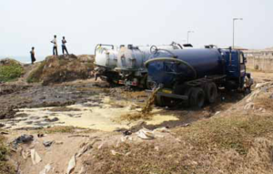
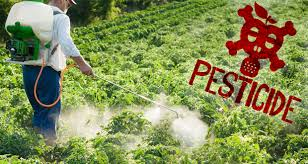
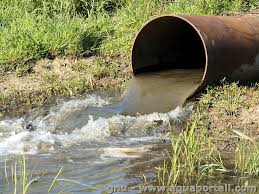
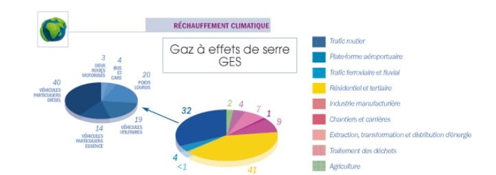
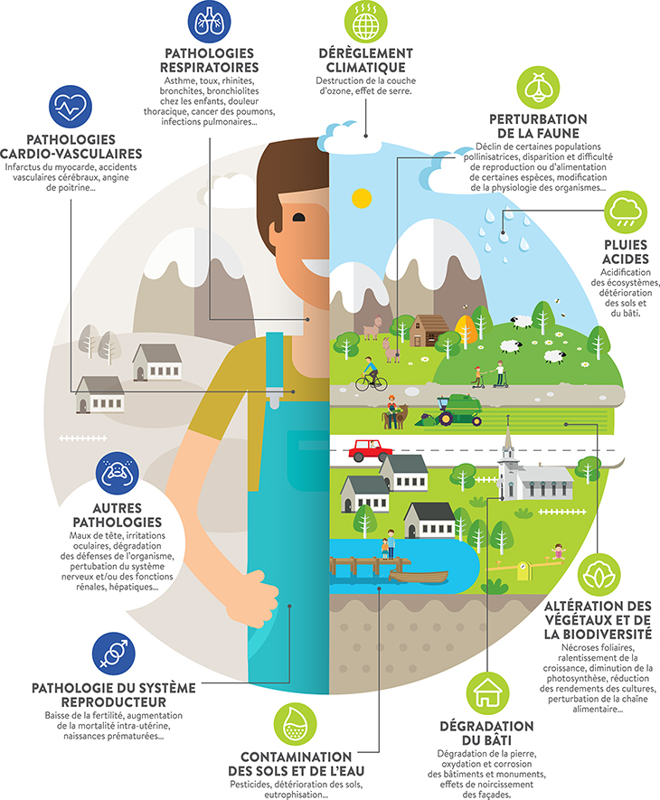

Nos sociétés fabriquent un nombre de substances différentes énorme, elles se comptent en centaines de milliers.
Tous les secteurs d'activités ont une part de responsabilité dans la pollution.
Ces rejets contaminent absolument tout sur la Terre, aucune région ou même les zones inhabitées ne sont épargnées, rien n'y échappe, l'air, le sol et sous-sol, l'eau avec les rivières, lacs, mers, océans...
Dans notre système actuel, nous avons un taux de recyclage encore trop bas par rapport à ce qui est produit.
Les quatres sources principales
Il existe plusieurs sources majeures de rejets, elles sont innombrables et concernant les gaz à effet de serre et les polluants atmosphériques, ces-dernières sont :
Le trafic routier, aérien et ferroviale (combustion incomplète des énergies fossiles, déversements)

Le trafic routier est à l'origine de plus de 1/4 des gaz à effet de serre, 1/2 d'oxydes d'azote, et +15% d'hydrocarbures.
Pour les plus curieux, on peut détailler ces sources, ainsi :
- 40% pour les véhicules particuliers en diesel, 14% pour les essence, 19% pour les utilitaires, 20% pour les poids lourds, 4% les bus et cars et 3% pour les 2 roues motorisés
- 4% pour les plates-formes aéroportuaire ( aéroport )
- <1% pour le trafic ferroviale et tertiaire

Concernant l'agriculture, ce sont les pesticides qui éliminent des insectes nuisibles aux cultures, ce qui est en soit une bonne chose, mais parallèlement tuent d'autres organismes tels que les bactéries, insectes, vers... qui sont indispensables pour des sols de qualité.
Un autre problème majeur est l'élevage intensif qui entraîne un excès de déjections animales par rapport à ce que la terre peut absorber.
De ce fait, cela constitue une source de pollution bactériologique avec l'eau qui s'infiltre dans les sous-sols enrichissant les cours d'eau et les nappes
souterraines en azote.

Ici, c'est essentiellement le chauffage qui représente la première source de gaz à effet de serre avec 40% des émissions.
Et il participe à hauteur de 20% dans les rejets d'oxyde d'azote NOx.
On parle aussi de pollution domestique avec les eaux de lavage ou ménagères, provenant des salles de bain et cuisines et contenant des graisses, détergents, solvants.
Il y a également les eaux vannes, c'est à dire l'eau des toilettes et qui contiennent des matières organiques et des germes fécaux.

A l'heure d'aujourd'hui, tout le monde sait que les industries ont une part de responsabilité importante.
Concernant les entreprises manufacturières, elles produisent 7% des gaz à effet de serre, 4% d'oxydes d'azote et quelques autres gaz.
Du côté du secteur énergétique, il y a 7% des gaz à effet de serre, 6% d'oxyde d'azote ainsi que 50% du dioxyde de soufre.
Tout ce qui est chantiers et carrières émettent des particules.
Graphique représentant la répartition de la pollution entre les différents secteurs

Retour en haut de la page
Les conséquences de cette pollution...
La pollution est induite par la présence de substances toxiques dans l'air, produites par l'homme. Cela a bien évidemment des conséquences sur les écosystèmes. Les répercussions sont visibles chez tout le monde et partout.
Personne n'y échappe, que ce soit les animaux, les cultures, les villes, les forêts etc...
Les bio-indicateurs sont des bons outils d'évaluation de la qualité de l'environnement. Le plus souvent ce sont des végétaux ou des animaux qui font l'objet de surveillance qui permettent d'indiquer la présence ou les effets des polluants :
- Les Lichens : l'absence de lichens est un indicateur de pollution.
- Le Tabac : même chose pour le trèfle, ils sont tous les deux sensibles à l'ozone.
- Les Abeilles : une pollution atmosphérique peut être traduite par une baisse d'activité des colonies et d'une autre part d'un taux de mortalité important.
- Les Animaux Domestiques : exemple avec le lait des vaches contaminé aux dioxines proche des incinérateurs.
- Disparition De Certaines Espèces : traduit une dégradation de la qualité de l'air.
... sur l'environnement
Une fois que l'air est pollué, il se fait emporter par le vent et la pluie. La pollution se disperse et peut parfois parcourir de grandes distances depuis son point de départ grâce aux nuages et températures élevées.
Néanmoins cela n'est pas sans impacts puisque le processus d'évolution des plantes est touché. Dans de nombreux cas, la photosynthèse est impossible et les conséquences sont graves sur la purification de l'air que nous respirons.
De plus, l'air pollué contribue à la formation de pluies acides. On distingue les retombées humides avec la pluie, la neige, le brouillard... et des retombées sèches comme les particules en suspension, le gaz... Les pluies acides
modifient la quantité de produits chimiques dans les sols, ainsi que l'eau (ruisseau, étang, mer, océan...) modifiant les chaînes alimentaires car empêchant le développement normal des espèces et végétaux, l'équilibre de l'écosystème est modifié
et participe à la perte d'espèces et de végétaux.
Un autre problème majeur est l'accumulation de gaz dans l'atmosphère. Les conséquences sont malheureusement bien connues. Pour en énumérer un minimum, on a l'effet de serre, le réchauffement climatique, diminution de la couche d'ozone etc...
Cette concentration de gaz est grandissante, et une propriété de ces-derniers est d'emprisonner la chaleur du soleil dans l'atmosphère et donc ne peut retourner dans l'espace après réflection sur la Terre.
Retour en haut de la page
Les effets de la pollution de l'air sur la santé et sur l'environnement en image
